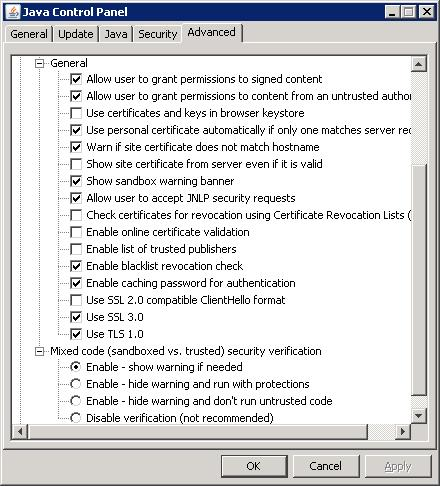

Contents
Signed Java Web Start applications and applets that contain signed and unsigned components could potentially be unsafe unless the mixed code was intended by the application vendor. As of the Java SE 6 Update 19 release (or later), when a program contains both signed and unsigned components, a warning dialog is raised. The following is an example of the dialog that the user may see:

Clicking the More Information... link brings up the following panel:

Clicking Yes blocks potentially unsafe components from running, and the program may terminate. If the user clicks the No button, the application or applet continues execution with some added protections.
Raising a warning is the default behavior, but there are options available to manage how this situation is handled.
You can manage how mixed code programs are handled via the Java Control Panel. The following screen shot shows the four levels of control available. See the Mixed code heading towards the bottom of the panel.

How to access the Java Control Panel varies for each platform
and sometimes varies for different releases of a platform. On
Microsoft Windows Vista and XP, you can bring up the panel via
Start menu > Control Panel > Java Control
Panel.
The first three options enable the software protections, but behave a bit differently.
The final option, Disable verification, is not recommended. This option completely disables the software from checking for mixing trusted and untrusted code, leaving the user to run potentially unsafe code with no warning and without the additional protections.
deployment.properties File
The mixed code protection options can also be set by using the
deployment.security.mixcode deployment property, as
described in Deployment
Configuration File and Properties.
deployment.security.mixcode=ENABLE
This option enables mixed code verification. When a potential security risk is encountered, a warning dialog is raised. This is the default value for this property.
deployment.security.mixcode=HIDE_RUN
This option suppresses the warning dialog. The code executes as if the user had clicked No from the warning dialog.
deployment.security.mixcode=HIDE_CANCEL
This option suppresses the warning dialog and behaves as if the user had clicked Yes from the warning dialog.
deployment.security.mixcode=DISABLE
This option is not recommended. The software is disabled from checking for mixing trusted and untrusted code, leaving the user to run potentially unsafe code with no warning and without the additional protections.
This section describes best practices for developers and deployers to protect their applications and applets from being maliciously re-purposed by replacing trusted components with untrusted ones.
Two new JAR manifest attributes are available, as of Java SE 6 Update 19, for deploying signed applications and applets. A warning dialog is not displayed when one of these manifest attributes is included.
Developers and deployers should check their signed Java Web Start applications and applets to determine if they mix signed and unsigned code. If users of these applications and applets may inadvertently download these applications and applets from rogue websites, deploying or re-deploying with one of the following attributes should be considered. Existing signed jars need to be re-signed after adding one of these manifest attributes. Note: source code of the classes and resources are not required for re-signing with the new manifest entries.
Trusted-Only AttributeFor applications and applets that do not require unsigned
components, the Trusted-Only attribute should be used.
No warning dialog will be displayed and an application or applet
that loads a jar file containing this attribute will not load any
untrusted classes or resources. This attribute prevents a signed
application or applet from being re-purposed with unsigned
components. You can specify Trusted-Only: true in the
manifest file. For example:
Manifest-Version: 1.0 Trusted-Only: true Created-By: 1.6.0-internal (Sun Microsystems Inc.)
All classes and resources in the application or applet must be signed and trusted.
Trusted-Library AttributeFor applications and applets that are designed to allow unsigned
components, the Trusted-Library attribute should be
used. No warning dialog will be displayed and an application or
applet may load jar files containing untrusted classes or
resources. This attribute prevents signed components in an
application or applet from being re-purposed with unsigned
components. You can specify Trusted-Library: true in
the manifest file. For example:
Manifest-Version: 1.0 Trusted-Library: true Created-By: 1.6.0-internal (Sun Microsystems Inc.)
All classes and resources in a jar file containing this manifest attribute must be signed and trusted.
In a mixed code application or applet, all signed classes and
resources must be included in jar files that contain the
Trusted-Library attribute.
Trusted-Library loader is now the parent of the
normal Web Start or applet class loader. For backwards
compatibility with the original search order, both loaders
cooperate to implement a common class path. Consistent with prior
releases, jar files are lazily downloaded and opened as needed to
find requested classes and resources.
Code in a jar file that is to be marked with the
Trusted-Library manifest attribute may need to be
modified slightly if it uses calls that are class loader dependent,
such as the single parameter version of
Class.forName(), Class.getResource(), and
Class.getResourceAsStream(), some variants of
java.util.ResourceBundle.getBundle(), and any other
methods which operate relative to their immediate caller's defining
loader. Changes only need to be made if the requested class or
resource might be found in a jar file which is not a
Trusted-Library (and is therefore loaded by the normal
Web Start or applet class loader).
Code in a Trusted-Library can look up the normal
loader by invoking
Thread.currentThread().getContextClassLoader(). Note,
however, that there are uncommon circumstances in which
getContextClassLoader() may return null.
For example, this may happen when the garbage collector uses a JRE
system thread to invoke the Object.finalize() method
of an unreachable instance.
If you need to convert class to Class.getResource()
or Class.getResourceAsStream() to their
ClassLoader equivalents, remember to adjust the string
parameter as described by the documentation for those two methods.
If the original resource name began with '/', then it
was an absolute name and the leading '/' simply needs
to be removed. Otherwise, determine if the class instance which was
the target of the getResource call is in a named
package. If it is an array you should first determine the
underlying component type of the array. Invoke
Class.getName() on the class or component type
instance. If the class name contains any '.'
characters, it is in a named package that will need to be prepended
to the original resource name. Determine the package name by
removing any characters after, and including, the trailing
'.' character. Next, replace any remaining
'.' characters with '/' characters.
Finally, add a trailing '/' and append the original
resource name string. This new string can now be passed to the
ClassLoader version of the getResource()
or getResourceAsStream() methods.
Generally, care must be taken to ensure that the code in the trusted library is written in a careful and secure manner and is otherwise compatible with being loaded in a separate class loader instance from any remaining jars which are part of the application and are loaded by the normal loader.
Answer: If you do not use the new manifest entries and you encounter the warning dialog when running your signed application or applet, your program contains mixed code and is affected.
Answer: Test your Java Web Start applications and Java applets against Java SE or Java for Business 6 Update 19 or later. If you are running earlier release families, you should additionally install and test your program under 5.0 Update 24 (or later), or 1.4.2_26 (or later), as appropriate. If you see the warning dialog, then the Java Web Start application or applet contains mixed code.
Answer: End users can click the "More Information" link before deciding whether to click "Yes" or "No" in response to the warning dialog. IT or System Administrators can choose from one of the Mixed Code protection options and configure enterprise desktops through the respective deployment properties described above. Developers and deployers can use the new manifest entries to protect their applications from tampering. No warning dialog will be displayed when one of these manifest entries is used.
Answer: Two manifest entries are available to application vendors to deploy, or re-deploy, their Java Web Start applications and Java applets.
Answer: The following releases from Oracle are affected:
Answer: Users will see a warning dialog if a signed Java Web Start application or Java applet contains mixed code regardless of whether it is downloaded from the Internet or Intranet.
Answer: The mixed code issue applies. See the question on applets and applications from the Internet.
Answer: No.
Answer: Please contact your vendor for advice on their implementation.
Answer: Java SE 6 Update 19 (or later) contains the latest security fixes and Oracle recommends that customers use the latest release.
Answer: See the question on testing. In addition, the release notes for each update release documents the latest changes included.
Answer: You need to use Firefox 3 and the next-generation Java Plugin. You can get Firefox 3 through sunfreeware.com. They have a full list of Firefox packages available. See Manual Installation and Registration of Solaris Plugin or Manual Installation and Registration of Linux Plugin, as appropriate, for more information.
Answer: The following
SecurityException messages are described for
informational and debugging purposes only. The actual message
contents may change between different implementations and
releases.
These SecurityExceptions are thrown when a jar file
contains one of the new manifest attributes and the jar file itself
contains untrusted components.
attempted to open sandboxed jar "+ url +" as Trusted-Only attempted to open sandboxed jar "+ url +" as Trusted-LibraryThe following
SecurityException is thrown when a jar
file contains the new Trusted-Only manifest attribute
and untrusted components have previously been accessed.
attempted to open Trusted-Only jar "+ url +" on sandboxed loaderThe following
SecurityException is thrown when at
least one jar containing the Trusted-Only manifest
attribute has been opened and a subsequent attempt is made to load
an untrusted component.
Trusted-Only loader attempted to load sandboxed resource from "+ url"The following two
SecurityExceptions are thrown when
mixed components are first detected and a decision is made to
disallow mixing. In the first case, everything previosly loaded was
trusted and then an attempt was made to load an untrusted
component. The second case is the reverse condition.
trusted loader attempted to load sandboxed resource from "+ url" sandboxed loader attempted to load trusted resource from "+ url"The following two
SecurityExceptions are thrown after
mixed components had previously been detected and a decision was
made to allow them to coexist. The exceptions indicate that a
component name collision (resource name or class package name) was
detected between trusted and untrusted components and the request
to load the resource or class was denied.
"resource \"" + name + "\" does not match trust level of other resources of the same name" "class \"" + packageName + "\" does not match trust level of other classes in the same package"The following two
SecurityExceptions are thrown when
untrusted components have been previously accessed, an attempt to
load a trusted component was previously detected, and a decision
was made to allow mixed components to coexist, and a jar containing
trusted components is opened and a component name collision is
detected between trusted and untrusted components.
"untrusted resource \"" + name + "\" in class path" "untrusted class package \"" + packageName + "\" in class path"
Trusted-Library manifest attribute. Can I sign the jar
files in the sandboxed JNLP without having to change the JNLP to
request the all-permissions security model?
Answer: Yes, with some limitations beginning
with Java Web Start in Java SE or Java for Business Update 21. The
sandboxed jar files must be signed in the same way (same signing
certificates) as one or more of the trusted jar files in a JNLP
file that uses the all-permissions security model, and
the trusted jar file must be opened by Java Web Start prior to any
sandboxed resource being loaded which shares the same signer. This
means the trusted jar file must be earlier in Java Web Start's jar
search order or it is triggered to load independent of the simple
search order by use of the jar indexing feature. In Java Web Start,
the main application JNLP's jars are searched first, followed in
declaration order by any JNLP extensions. Jar files labeled within
a JNLP as "eager" are searched first, followed by "lazy" jar files,
followed by any jar files labeled as using the "part" feature.
Answer: No, Java ME is not affected.